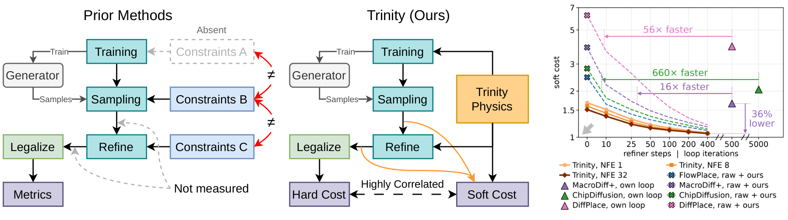
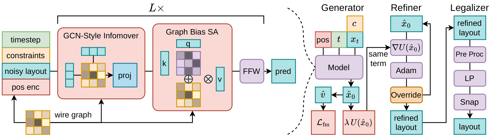

Early in chip design, every functional block gets a place and a shape. The inputs are the blocks, each with a target area, and the netlist of wires between them. Two objectives pull the blocks together: short wires between connected blocks and a small chip outline. A set of constraints holds them apart and pins them down. Good floorplans live exactly where these forces balance, on the edge of what the rules allow.
A floorplan is a negotiation between opposing forces

- Hard rules, must hold
- Area and no overlap. Every block keeps its area, and no two blocks may intersect.
- Fixed shape. Some blocks come with a width and height that cannot change.
- Pre-placed. Some blocks are already nailed to a spot.
- Soft rules, counted and penalized
- Clusters. Blocks of a group should touch each other.
- Multi-instance blocks. Copies of one design should share one shape.
- Boundary blocks. Some blocks must sit on a given edge of the chip.
Classical solvers such as simulated annealing face all of this inside their search, at the price of starting from scratch on every chip. Learning promises to amortize that search into a model, and a generative model fits the task: a chip admits many good floorplans rather than one, and a generator drafts complete layouts from that distribution in milliseconds.
Existing generative placers put the rules everywhere except where the model learns, and score only the end
Existing diffusion placers train their networks only to reproduce reference layouts. The rules of the chip arrive afterwards, three times and in three different forms: a hand-tuned guidance term inside the sampler, post-hoc optimization loops of 500 to 5,000 iterations, and a legalizer. Compared with classical solvers, where every move faces the rules and the objectives together, the rules have migrated from the core of the search to the tail of a correction chain.
The way these pipelines are evaluated hides the consequences. Only the final legalized layout is scored, and every stage writes the rules in its own form, so the layouts in between have no common measure. A weak generator behind a strong correction looks identical to a strong generator behind a weak one, and nobody can tell what the generator contributes, or what each correction costs.

Write the rules once, as physics, and use them everywhere
Every rule of floorplanning is a geometric quantity of the layout, so each can be written as a smooth function of block positions and shapes that is zero when the rule holds: the overlap area of every pair, the gap inside each cluster, the shape spread of each multi-instance group, the distance of each boundary block to its edge, plus the wirelength and the outline area. Their weighted sum U is one energy, a physics of the layout. Trinity uses that one energy three times, the middle of the figure above.
train
A term of the training loss
The energy is added to the flow-matching loss on the network's clean prediction, so the model learns the rules together with the data instead of having them imposed after it.
refine
The energy of the refiner
After sampling, Adam descends the same energy with every gradient in closed form, about a millisecond per layout, on any generator's samples.
score
The base of a soft cost
The same quantities extend the contest's hard cost to layouts that still overlap, so raw, refined and legalized layouts finally share one scale.

A physics term in the loss is guidance the model performs for free
Trinity trains with rectified flow: a clean layout x0 and noise x1 are mixed as xt = (1 − t) x0 + t x1, and the network predicts the clean layout x̂0. A network trained on references alone predicts the posterior mean x̄0 = 𝔼[x0 | xt], which can break the rules because legal layouts do not form a convex set. Adding the energy to the loss changes what the ideal network predicts:
ℒ = 𝔼 [ ‖ v̂ − v ‖² + λ U(x̂0) ]
⟹ x̂0⋆ = proxγt U(x̄0) = argminm ½‖m − x̄0‖² + γt U(m), γt = λt²/2
The trained network takes the posterior mean and makes one proximal step toward the rules. The step is large when the layout is noisy and vanishes as t → 0.
This is the correction existing placers apply by hand inside their samplers, but learned once, so sampling needs no guidance at all. And it fades in the right way. A loop of gradient steps inside the sampler applies the same push at every noise level. It substitutes a clean-space gradient for the exact guidance, an error that does not shrink as sampling ends, and it keeps moving a layout that already obeys the rules. The learned step shrinks as t² and leaves a legal layout alone. After sampling, at t = 0 where the learned step has vanished, the refiner simply continues descending the same U.
Rules, not answers. The flow-matching loss compares the prediction with a reference layout, so it can only teach what the training chips show. The physics term compares the prediction with nothing: it checks the rules on the model's own output, using only the instance's constraints and netlist. It is a self-supervised signal, and it is just as valid on a chip the data never covered as on one it did. A model trained this way learns how a legal floorplan behaves, not only what the training floorplans looked like.
flow-matching loss
‖ v̂ − v ‖², with v built from the reference layout
Needs the answer. Teaches the distribution of training floorplans.
physics term
λ U(x̂₀), the rules evaluated on the model's own prediction
Needs no answer. Teaches the rules on every prediction, like a self-supervised loss.
ℒ = 𝔼(c, x0) ∼ data [ ‖ v̂ − v(x0) ‖² ] + λ 𝔼c [ U(x̂0 ; c) ]
The first term needs the reference layout x0. The second needs only the instance c, its constraints and netlist: the rules are a function of c, never of the answer.
x̂0⋆(xt, c) = proxγt U( · ; c) ( x̄0(xt, c) )
The data only teaches the posterior mean x̄0, which is unreliable where the data is thin. The proximal step is driven by the rule of the instance itself, so it points the right way for any c.
Trained on data only
Trained with the physics term
The difference shows when the chips get bigger than anything in training. FloorSet chips have 21 to 120 blocks. On the GSRC benchmarks, soft blocks must fit a square outline with 10% dead space (red dashed square). Below are the best legalized layouts of the same model trained with and without the physics term, each the best of 4 seeds × 16 draws.
| GSRC case | With physics (Trinity) | Without physics (λ = 0) | PARSAC WL | ||||||
|---|---|---|---|---|---|---|---|---|---|
| WL (mm) | W × H | Dead space | Draws fit | WL (mm) | W × H | Dead space | Draws fit | ||
| n100, outline 444 × 444 in range | 294.7 | 433 × 423 | 2.1% | 36% | 293.9 | 444 × 413 | 2.0% | 80% | 303.5 |
| n200, outline 440 × 440 beyond | 554.9 | 434 × 407 | 0.7% | 100% | 560.1 | 440 × 498 | 19.8% | 0% | 576.0 |
| n300, outline 548 × 548 far beyond | 681.3 | 708 × 448 | 13.8% | 0% | 679.8 | 648 × 503 | 16.2% | 0% | 705.2 |
Best legalized layout over 4 seeds × 16 draws (NFE 8, 400 refiner steps). W × H is its outline against the 10% dead-space square; red marks an outline that does not fit. At n300 no draw fits, so the row shows the best legal layout. FloorSet training chips have 21 to 120 blocks.
Inside the training range the two models tie (n100: 294.7 against 293.9 mm), as expected when the data already covers the case. At 200 blocks, almost twice the largest training chip, the physics term is the difference between a floorplan that fits with 0.7% dead space and one that cannot fit at all, at shorter wirelength too. At 300 blocks neither fits. That residual is a known open problem of transformer generators on sizes far beyond training, not of the physics, and it is where we see the next step.
With one scale, every stage shows what it contributes
We re-implemented four existing diffusion placers, FlowPlace, ChipDiffusion, MacroDiff+ and DiffPlace, on the same data and training recipe, and scored every model at every stage on 12,000 held-out FloorSet chips with the soft cost.
The physics term improves every rule of the raw samples
Same plain transformer, physics term on (λ = 0.01) versus off: reduction of each quantityA usable floorplan from one network call
Soft cost of raw samples against sampling steps (log scale, lower is better)Our refiner against each placer's own loop, from the same raw samples
Soft cost against refinement steps or loop iterations. Lines: our refiner on each generator. Triangles: each placer's own loop at its released iteration count. Log scales.Three things become visible. The training term governs the start: it lowers raw soft cost and keeps Trinity ahead at short refinement budgets. The refiner governs the end: after a few hundred steps every generator converges near one value, and each one ends below where its own loop leaves it, reaching that loop's cost 16 to 660 times sooner. So generators should be compared under one shared refiner; under their own loops, the loops drive most of the gap. And the soft cost ranks settings the way the contest's hard cost does (Spearman 0.94), so these budgets can be chosen without running the legalizer.
Legal floorplans, fast
After legalization
Hard cost of the first legalized draw: each generator with its own loop versus with our refiner1.014
mean hard cost on the FloorSet validation set, best of 48 draws
1.63 s
per chip on one GPU, legalization in parallel
−36%
refined soft cost against the best existing pipeline
≈1 ms
per layout for 400 refiner steps in a batch
More chips. The full pipeline on three FloorSet validation chips.
What we hope carries over
Measure every stage, not just the end
The endpoint of a correction chain hides who did the work. With one scale for raw, refined and legalized layouts, the generator's contribution becomes visible.
Put the physics where the model learns
A rule in the training loss becomes a correction the network performs for free, strongest when noisy and gone when clean. A rule in the sampler is a cruder substitute that keeps pushing on good layouts.
Compare generators under one refiner
Under a shared refiner generators converge, while their own loops differ widely. Most reported gaps between pipelines come from the loops.
Choose budgets before the expensive step
The soft cost ranks settings the way the legal hard cost does, so sampling and refinement budgets can be tuned without running the legalizer.
BibTeX
@misc{trinity2026,
title = {Trinity: One Differentiable Physics for Training, Refining
and Scoring Generative Floorplanners},
author = {Yeh, Shih-Ying and Wang, Tzu-Sian and Wang, Xuehai and Lee, Jia-Hua and Kaplan, Daniel Z. and
Xu, Ming-Qi and Tang, Wuqian and Wang, Chun-Yao and Lai, Shang-Hong and Lee, Chun-Yi},
year = {2026},
note = {arXiv identifier to appear}
}